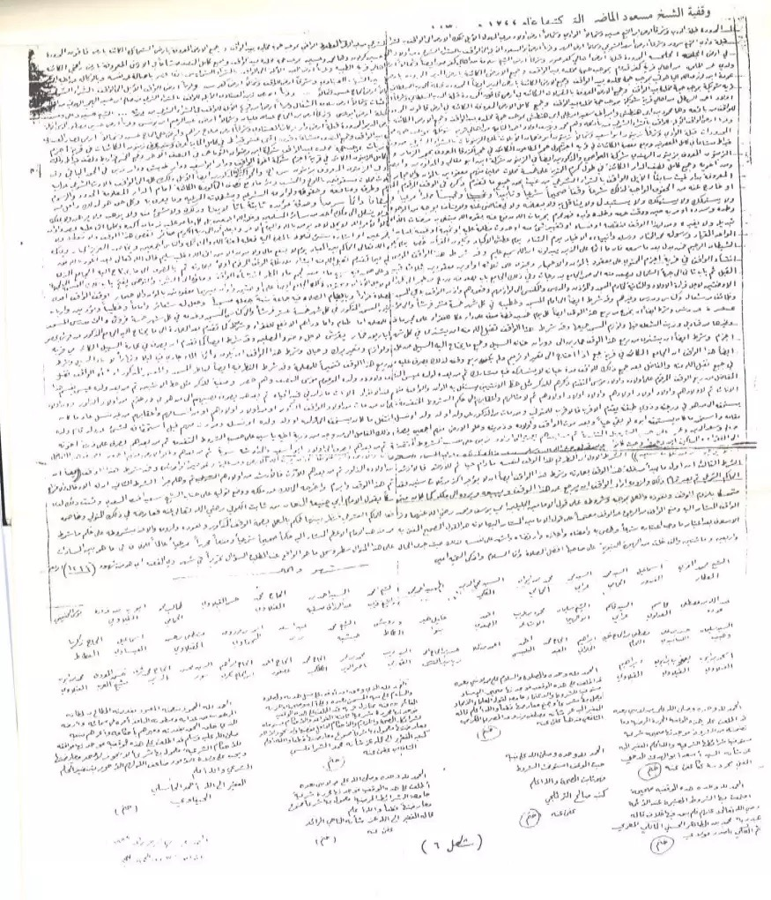
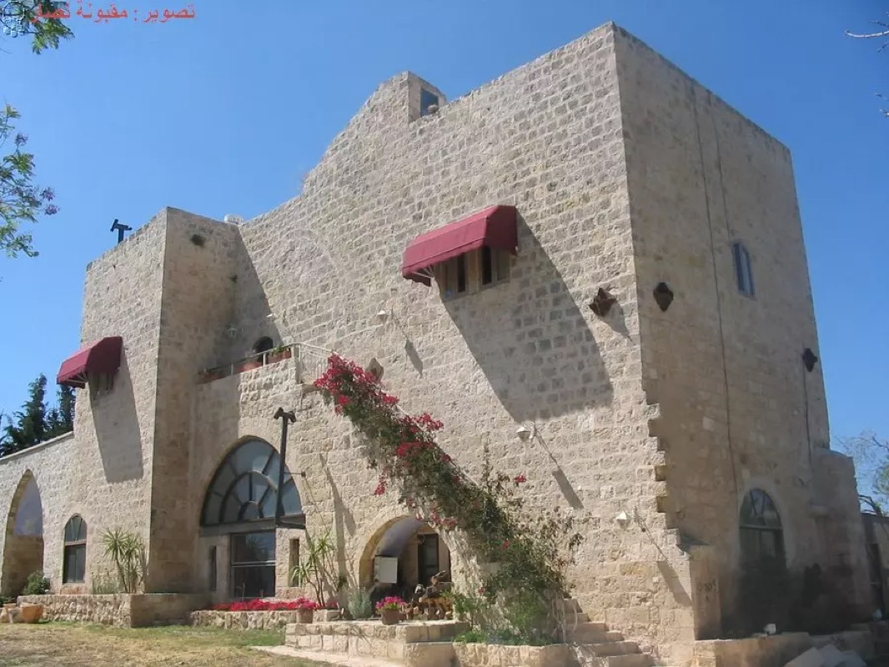
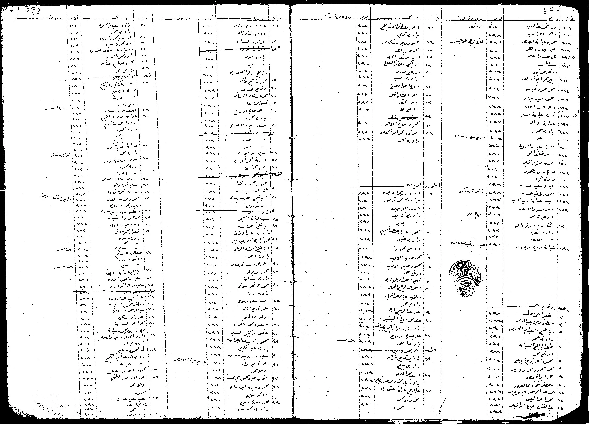
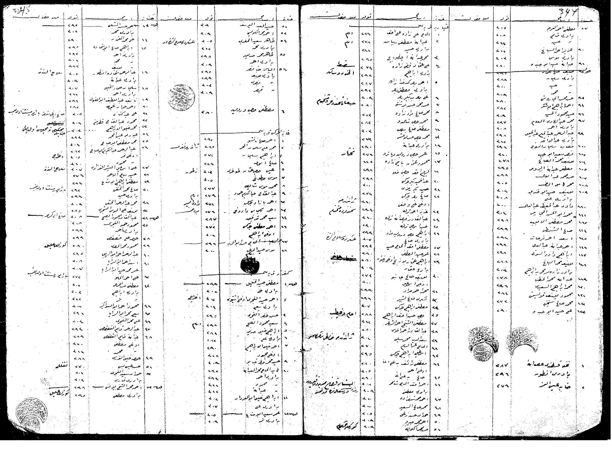

اسمان في سياق واحد
يذكر سجل عائلات الطنطورة آل أبو ماضي، ثم يذكر من زعامة آل ماضي في الطنطورة محمد الماضي، أبو يحيى.
اقرأ الربط ←لقطات حديثة من شواطئ الطنطورة المحتلة
من الطنطورة إلى إجزم، ذاكرة موثقة وشواهد عائلية
توثيق عائلي يجمع الأصل القروي، أسماء الفروع، الشهداء، والوثائق التاريخية.
تجمع الوثيقة بين الرواية العائلية، مصادر القرى الفلسطينية، السجلات العثمانية، وشهادات أبناء الطنطورة في اللجوء.
يذكر سجل عائلات الطنطورة آل أبو ماضي، ثم يذكر من زعامة آل ماضي في الطنطورة محمد الماضي، أبو يحيى.
اقرأ الربط ←يرد اسم الماضي في سجل نفوس إجزم سنة 1913م بوصفها أكبر حمائل القرية وأغناها.
اقرأ في الوثيقة ←ترتبط العائلة بـ الشيخ مسعود الماضي، ووقفية سنة 1244هـ / 1830م، ونفوذ آل ماضي في الساحل الكرملي.
اقرأ في الوثيقة ←تذكر المصادر أصل العائلة من إجزم من بني هرماس، وتعرض أدبيات الوحيدات امتدادًا عشائريًا أوسع لبني هرماس وبني عطية.
اقرأ في الوثيقة ←جاء هذا الموقع لحفظ ذاكرة عائلة أبو ماضي / الماضي وتقديمها بصورة واضحة للأبناء والأقارب والباحثين. يجمع الموقع الوثائق العائلية، السرد التاريخي، أسماء الفروع، والمصادر المتاحة، ليبقى تاريخ العائلة محفوظًا ومنظمًا وقابلًا للتحديث عند توفر وثائق أو شهادات إضافية.
ذكر هرماس زيد في دفتر ضريبة عثماني لإجزم.
وقفية الشيخ مسعود الماضي (1244هـ).
تولّي الشيخ مسعود الماضي حكم غزة ويافا.
دور آل ماضي في ثورة الفلاحين.
ذكر محمد الماضي في سياق حكم حيفا.
ورود الماضي كأكبر حمائل إجزم وأغناها.
انطلاق جمعية تعاون القرى من إجزم.
حضور آل أبو ماضي في شهداء وناجي الطنطورة.
تقرأ هذه الوثيقة تاريخ آل ماضي / أبو ماضي / الماضي من خلال مسارين متصلين: مركز العائلة التاريخي في إجزم، وفرعها المعروف في الطنطورة. وتعرض الشواهد كيف بقي الاسمان حاضرين في سجل واحد وذاكرة واحدة، من بني هرماس وإجزم إلى الطنطورة واللجوء.
«آل أبو ماضي: أصلهم من أجزم من بني هرماس وهناك مركزهم، ومن زعامة آل ماضي في الطنطورة محمد الماضي (أبو يحيى).»
— موسوعة القرى الفلسطينية، عائلات الطنطورة
ومن هذا الفرع الطنطوري الشهيد رشيد ابن عمر أبو ماضي، ومن ذريته وصفي رشيد عمر أبو ماضي وأبناؤه. ومن فرع شقيقه وحيد عمر أبو ماضي ابنه عمر وأبناؤه. اقرأ المزيد عن الشهداء والناجين ←




للقائمة الكاملة بالمراجع المعتمدة، انظر المصادر في الوثيقة التاريخية.
هذه الصفحة مخصصة لأفراد العائلة، الأقارب، الباحثين، وكل من يملك تصحيحًا، وثيقة، صورة، شهادة، أو إضافة يمكن أن تساعد في توثيق تاريخ العائلة بدقة أكبر.